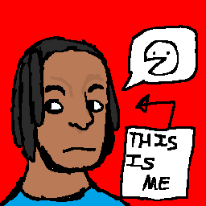
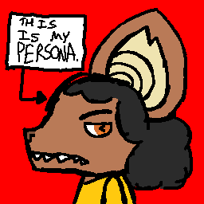

About this website
Who are you?
 
I'm Aleph Diallo, known for... um... uh...
I'm an aspiring cartoonist who was born in October of 2009, and when I first held a crayon, I began drawing. I haven't stopped since.
Why "BadBunsen"?
A little while after I first got my very own computer, I learned about a little site called DeviantArt, and made my own account to make shitty fanart of Scribblenauts and Drawn to Life. The name of this account? BadBunsen, an amalgamation of Bunsen from Bunsen is a Beast and Breaking Bad the word bad. It's also the name of one of the characters I had at the time.
BadBunsen would be my online monkier for about a year on numerous websites, from ToonDoo (which shut down from a data breach) to Toonator (which shut down from the discontinuation of Flash Player), and then it died hard when I wanted a username with a WordGirl villain in it. I'd briefly reinstate the BadBunsen name with "BadBunsenIsBack" within the same year that I got rid of it (it's still up, too!), but that also died hard... this time, with a vengeance.
Fast forward almost a decade later, and I find myself in a bit of a rut. Rubberocket is very hard to spell without ending up at a HugeDomains page, and it's New Year's Eve. I needed something easier to get people to. Turns out BadBunsen is much easier to type, and on top of this it wasn't taken by some domainsquatter. And so, BadBunsen was reborn.
What do you like?
Jokes aside, it can be boiled down to a couple of things. Cartoons, animals, rock music and tech.
If you want something more complex, then I can give you a few examples of what influences my art: Old early-2000s cartoons (including Flash animations), John Kricfalusi (the art, not the guy's actions), Radiohead, Jamie Hewlett, anything that moves, and so on and so forth. Just throw me anything that looks good and I'll probably shove it inside my little cranium and understand that it's a surprise tool that'll help me later.
What do you dislike?
Do you honestly have to ask?
What tools do you use?
Copy paper (or a sketchbook), pencils (colored or otherwise), and pens. Digitally, it's a 21-inch monitor, Krita, and a pen tablet.
When'd you start making websites?
2020, during the pandemic. I got bored and found a website named Glitch. In my "infinite" wisdom I thought "hey, why not make a professional website with this?", and so my indie web journey began without me even knowing it.
The websites I made with it were a page for my stories⤴ (in which none of them make sense) and a page for a cancelled fanon version of South Park⤴, which seems to be the furthest I've gone to actually make a TV show. Which is sad, considering what the effort was put into.
What's your persona supposed to be?!
Guy with a hoary bat for a head. He's not a bat bat because there's the question of "how would they hold a pencil?".
How do I contact you?
Pretty sure there's a link at the top of the screen named contact. Click that!
Are your works copyrighted?
If most works are copyrighted as soon as they are made, then a majority of my works are copyrighted and owned by me. They're also DMCA protected, so... yeah.
However, this site's code is licensed under the BSD 3-Clause license ⤴, so feel free to view it. Just... don't copy the works I put up on there, most of them have specific licenses that don't equate to the public domain.